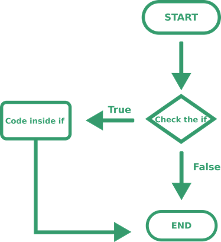
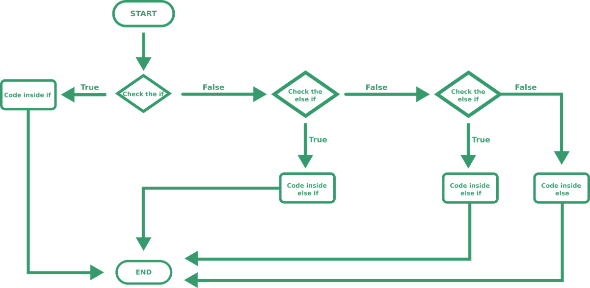

If statement
THEORY
So far we've only been able to create programs that always does the same thing, but programming is much more than that: we can use flow controls. [insert flow controls] A good way to explain those are flow charts. The simplest flow control is if: it checks a condition and if it's true executes a piece of code, otherwise skips it. The flow chart for if looks something like this.
PRACTICE
Console.WriteLine("Write the password here: "); //ask the user for the password
string userinput= Console.ReadLine(); //read what the user wrote
if (userinput=="password123"){
Console.WriteLine("My secret is that I'm a penguin");
}
Console.ReadLine(); //we use this command to prevent the windows from closing
//end
That's great! We wrote a useful program, but let's see what's new:
We used the if statement like this:
if (condition){
Piece of code to execute
}
The if tells the program that we are using that flow control, the condition inside the round brackets is the one that the computer will check and the code inside the curly brackets will be executed only if the condition is satisfied. The curly brackets are always used to wrap a code block.
Our condition had this structure: variable == value, this is the structure of the equality, it checks if the variable is equal to the requested value, if so returns true, otherwise returns false. Other operators are
|
!= |
Not equal |
|
> < >= <= |
Greater Smaller greater of equal smaller or equal |
|
condition1 && condition2 x>5 && <10 //returns true if x is between 5 and 10 |
It's the logical AND: returns true only if both conditions are true |
|
condition1 || condition2 name=="George" || name=="Tim" //returns if the name is either George or Tim |
It's the logical OR: returns true if either condition is true |
|
() |
You can wrap condition inside brackets, those work as in math: first you solve things inside the brackets, then outside |
An example of a complex condition:
if ( (x>2 && x<=5) || (x>=10 && x<15) ){
Console.WriteLine("GOT IT");
}
Else statement
THEORY
After our if statement we can write an else statement, that is a fancy way of saying if the conditions is false do this. In our flow chart would look like this
PRACTICE
The syntax for the else statement is this:
if (condition){
Piece of code to execute
}
else{
Piece of code to execute
}
The syntax for the else if is this:
if (condition){
Piece of code to execute
}
else if (second condition){
Piece of code to execute
}
We can also concatenate more if/else/else if statements like this
if (condition){
Piece of code to execute
}
else if (second condition){
Piece of code to execute
}
else if (third condition){
Piece of code to execute
}
else{
Piece of code to execute
}
In this case the rules are that the statements are check in descending order in the code and that the else has to be the last one. We'll use those chains if we have multiple options and want the user to pick one. In case you didn't understand, here is a chart
Ok, I admit it I might have a problem with those charts.
ASSIGNEMENT
Using what you learned try to create a program that asks the user for a password and if the users inputs the right password write your secret, if he inputs a second password write a fake secret (this is to prevent blackmail), if the password is wrong just write "You don't have the password, go away".
In case you want to check the solution...
Console.WriteLine("Write the password here: "); //ask the user for the password
string userinput= Console.ReadLine(); //read what the user wrote
if (userinput=="secretpassword"){ //real password
Console.WriteLine("My secret is that I'm a penguin"); //real secret
}else if (userinput=="blackmail"){
Console.WriteLine("I hate biscuits"); //fake secret
}else{
Console.WriteLine("You don't have the password, go away"); //error
}
Console.ReadLine(); //we use this command to prevent the windows from closing
//end
ADVANCED
If you just need to assign a value to a variable in the if and else statement you can use a compact form.
Instead of using this
if (condition){
x=valueTrue;
}
else {
x=valueFalse;
}
You can write this:
x=condition ? valueTrue : valueFalse;